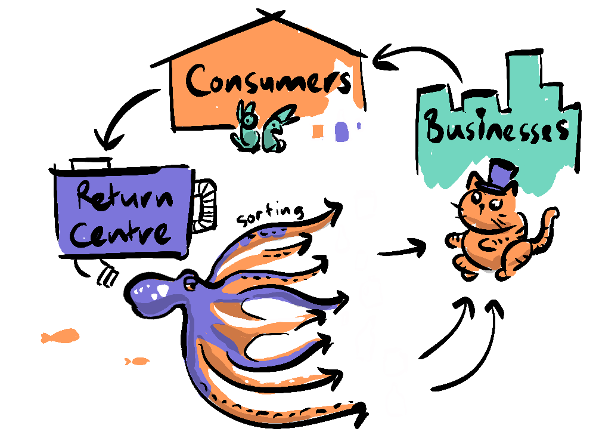
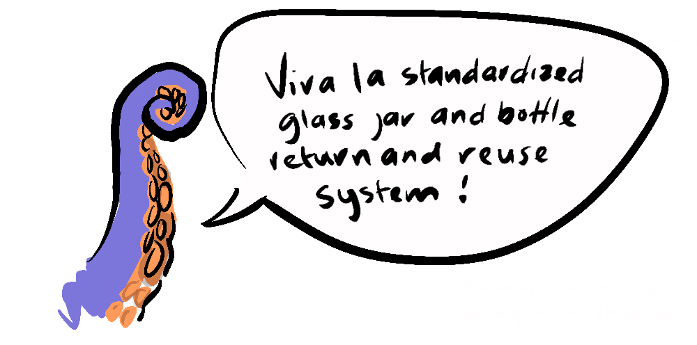

~ a simple recycling idea: part 3 ~
Let's take a look through our crystal ball at Glass Bottle Utopia, where all companies have seen the wisdom of using a standardised set of 8 different sized jars and bottles - the system works in a perfect cycle with no waste, no intensive processing, automated sorting and free allocation of our eight glazed saviours. The process is so efficient it's virtually costless, which is a good job because plastics (which fund this program through the plastic tax) have all but been eliminated.

Until we realise... you can't squeeze glass!
Nope, deal-breaker there - who wants to return to the days of thumping their tomato sauce out of the bottle, only to wind up drenching their chips when half a litre ejects at once? Sure it might seem like a superficial issue, but points to a wider one - the market demands the most functional and often the most desirable packages in order to stand out. There's a reason why our Utopia carries a lurking dystopic sense - It fails to appreciate the deep human need for novelty and invention.
But, this just serves to illustrate that there is no one panacea. And yet we still have the problem that that plastic recycling is not sustainable. Luckily there are experts who have been fighting this battle for decades who have developed successful present solutions and have big plans for the future.
First, in my neighbourhood of Auckland New Zealand, successful pilots are being expanded for food scraps bins, check here for when the rollout will reach you. These collections may seem inconsequential, but they are in fact very effective. Firstly, these programs stop organic waste from going into landfill (which not only takes up unnecessary space but more importantly produces methane and can combine with inorganic material creating toxic compounds that enter ground water).

Secondly, this food waste also gets composted, making the most of valuable nutrients. So, that's a win-win.
In New Zealand, the end of plastic bags in supermarkets seems to have finally succeeded - and like with so many policies aimed at a healthier society (such as the smoking in bars legislation and anti-smacking legislation) despite an initial uproar from regressive opponents, it has been painlessly accepted across the country.

This change is reflected in numerous countries across the world, including 30 countries in Africa as well as China, Europe, UK, Bangladesh, Colombia, even the small two island nation of St Kitts & Nevis who are aiming for a 30% plastic reduction in 5 years to preserve their tourism industry.
The main player in all this - Greenpeace hopes to consolidate this piecemeal progress with their Treaty on Plastic reducing the amount of single use plastics in circulation around the world. But not only are there reasons to be hopeful politically, there are also independent actors helping to make changes.
Glen Herud's Happy Cow Milk supplies milk from cows that are allowed to stay with their calves and is supplied in reusable glass bottles (who would have ever thought of that?). While it has been difficult to compete against intensive farming practices, Glen has been supported by a loyal group of shareholders who have made the growth of his systems sustainable.
While his is a heart-warming story of a more humane approach to farming it's also a testing ground for the use of reusable glass containers, which shows it can be done - even with something as hygienically problematic as milk! So, why not fund more of this? Or do this on a national scale, heck, an international scale? Well, efforts are being made...
The Container Return Scheme was proposed by the New Zealand government in 2022, to charge a small fee (20c) for each container used which could be refunded at a return centre. The Zero Waste Network claims.
"No other single waste stream could be managed so easily by such a proven method as a mandatory CRS where recycling rates overseas of 85–95% are common." - The Zero Waste Network
Unfortunately, in March 2023, under pre-election pressure to focus on more centrist policies, Prime Minister Chris Hipkins has deferred the Container Return Scheme.

So, perhaps it's a little unrealistic to think we could push our even more ambitious plan, which after all, not only requires infrastructure for plastic taxation, and building return centres, but also requires the design and manufacture of the standardised bottles and jars in the first place.
But I'll make one final pitch for it...
There's a possibility that the reason we can't get support for a Container Return Scheme, might be because we've seen it before. and even though it has at times been successful, people find it hard to believe something that's been around for such a long time and hasn't solved the problem can suddenly solve the problem.

But what about a scheme based on a new product? People love new products! A standardised set of bottles and jars is new, and depending on what gets you excited... potentially exciting. It also has four unique benefits...
We have seen that small companies (like Happy Cow Milk) and small countries (like St Kitts and Nevis) can lead the way. My own country, New Zealand has a history of firsts, we were the first to give women the vote, the first to climb Mt Everest, and we have been a fertile ground for testing various technological innovations such as EFTPOS, electrified bus networks, tele-health solutions and e-prescriptions. New Zealand's knack for innovation and willingness to be trailblazers makes us ripe for a sustainability revolution. Despite setbacks, like the CRS scheme getting deferred, Let's be the prototype, then export it to the world - Who's with us?.

... or else we could just put the CRS back on the table.